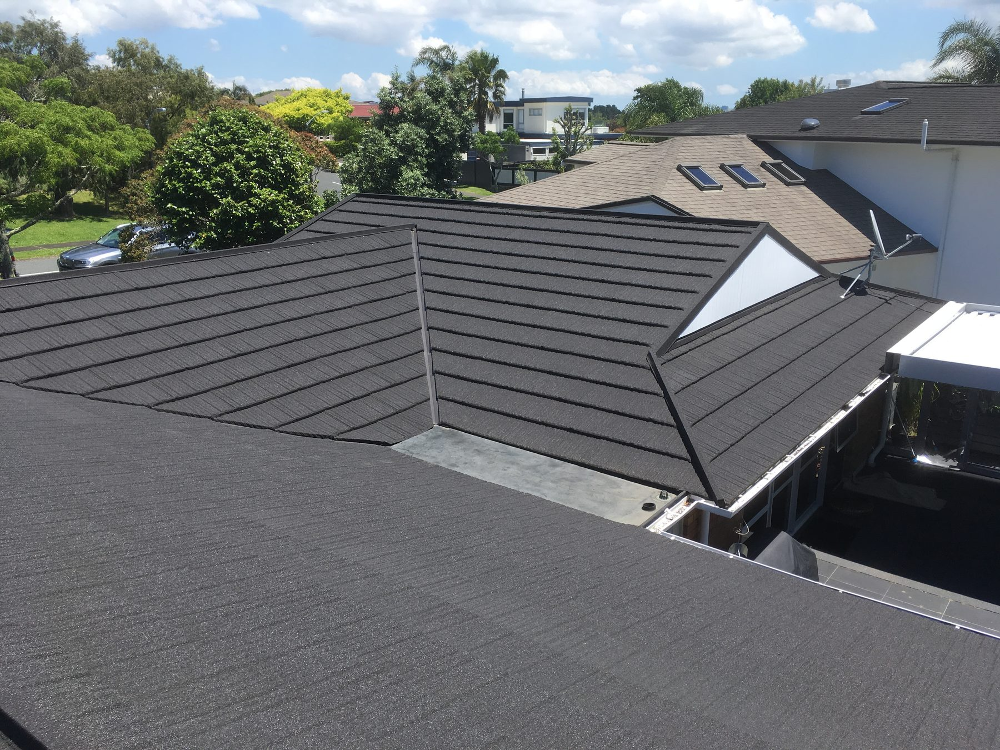

Metal tile roofing in Auckland
Metal tiles give you the look of a traditional tiled roof, but they're lighter and more durable. We're resellers and installers of Gerard products, and we install metal tile roofs on reroofs and new builds across Auckland.
Why choose a metal tile roof?
- It's light: That takes weight off the house, which is handy when replacing a heavy tile roof.
- It keeps the tiled look: It suits homes where long-run wouldn't look right.
- There's plenty of choice: Profiles range from the organic grooves of Stratos to the classic arches of Milano.

Popular colours
Smooth colours include Ebony, Windsor Grey, Flax, Ironsands, Sandstone Grey and Grey Friars. Textured colours include Ashwood, Charcoal, Eclipse, Onyx, Teak and Midnight.
Metal tile questions
Do you work on older Metrotile roofs?
Yes, we work on all types of older metal tile roofs as well as new.
Can metal tiles replace concrete tiles?
Yes, it's a common swap. Mike will check the roof and talk you through it.
Are metal tile roofs noisy in the rain?
Metal tile roofs are generally no noisier than a standard long-run COLORSTEEL® roof during rain. However, textured metal tiles can be slightly quieter, as their textured coating helps reduce the sound of rainfall.
Get a price for your metal tile roof.
Tell us a bit about your property and Mike will get back to you personally.
- 1Send your detailsTakes about a minute, or just call or text.
- 2Mike gets in touchWe aim to respond within 3 hours and usually visit within the next working day.
- 3A clear, itemised quoteFixed, transparent and no pressure.
Get your free quote
Free and no pressure.